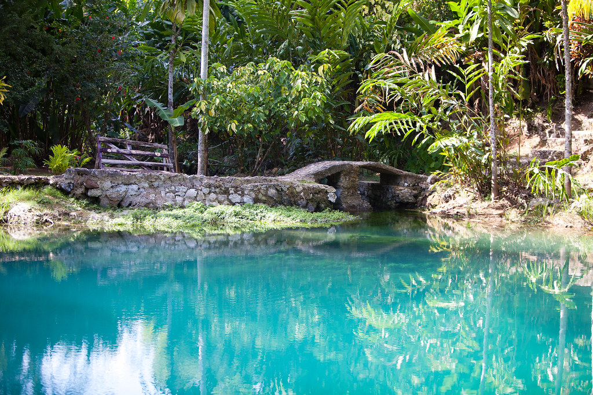

Tourist Attractions and Food
Tourist Attractions

Dunn’s River Falls and Park
Dunn’s River Falls and Park is in Ocho Rios, St. Anns. Things you can do here:
- Climb the falls
- Ride the Zipline
- Relax at the Beach
- Destination wedding
- Merchandise shopping
- Kids Splashpad
Rafting the Martha Brae Rafting the Marthae Brae area of embarkation is called Rafter’s Village which includes two souvenir shops, swimming pool, picnic grounds etc. The ride itself is on 30-foot bamboo raft and as you relax down the Martha Brae River for over 3 miles, lasting for about an hour.
Dolphin Cove Do you love dolphins? Dolphin Cove has 6 habitats, they are in Ocho Rios, Montego Bay, Moon Palace, Puerto Seco and Yaaman. They have different programs swimming with the dolphins experiences, including dolphin encounter, Yaaman + Dolphin Encounter, Dolphin Royal Swim, Shark Encounter etc.
Cool Blue Hole
Cool Blue Hole is in Ocho Rios, St. Ann. Are you fascinated with minerals or rocks? Cool Blue hole has several pools that were created naturally out limestone. The name comes from the color of the water.
Things you can do at Cool Blue Hole:
- Swim, whether its in the lagoons or the natural pools
- Cliff diving
- Hiking mini falls
- Rope swinging
- Caving you can go through
- Be captivated by the blue color of the water and the scenery around
Food

Jamaica’s culture includes different type of foods/snacks.
Some of the foods to try in Jamaica:
- Jerk Chicken
- Ackee and Saltfish
- Coconut Drops
- Curry Goat
- Oxtail
- Gizzada
- Jamaican Patty
- Rice and Peas